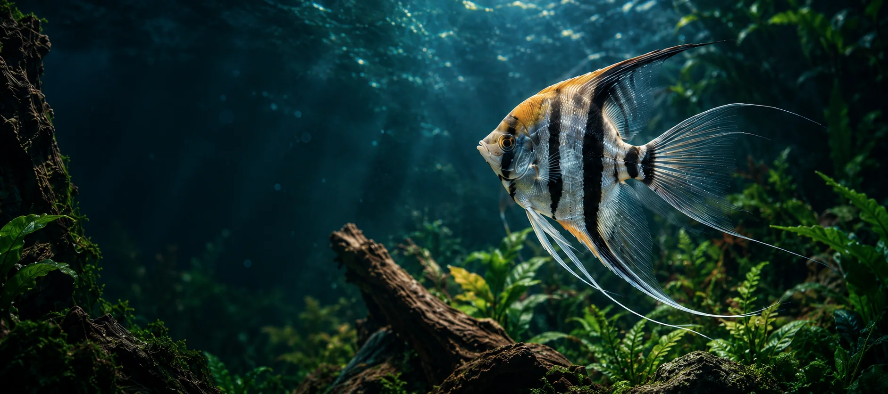
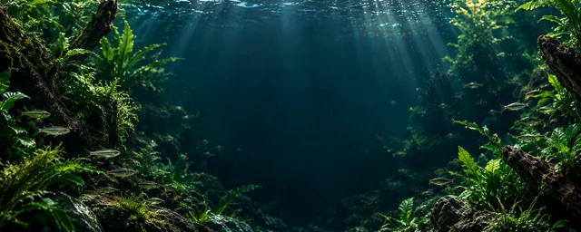

MORE THAN FISHA QUIETER WORLD, BEAUTIFULLY IMAGINED
A World of
Ornamental Beauty,Inspired by Nature.
Ornamental fish, aquatic plants and sculptural driftwood — an invitation to explore the beauty beneath the surface.
INDEPENDENT DESIGN CONCEPT
A LITTLE
CLOSER
TO NATURE
NATURE
CONNECTS
US ALL

OUR HERITAGE · A DESIGN STORY
A World of Inspiration.
A Connection to Nature.
Inspired by the meeting of water, greenery and city life, this fictional concept explores a simple idea: nature’s beauty can bring us a little closer. A Singapore-inspired waterfront sets the scene for an imagined aquatic world.
The inspiration
The waterfront is a creative illustration, rather than a photograph of premises. The story, brand and collections belong to an independent local design demo; no company history or operating location is implied.
OUR COLLECTIONS
Nature’s Finest,
Thoughtfully Composed.
Explore the colour and movement of an ornamental fish study.
Take a Closer LookOrnamental Fish
COLLECTION STUDY
Ornamental Fish
Flowing fins, subtle light and vivid colour bring movement to this collection study. Explore the visual character of ornamental fish through an imagined underwater scene.
The palette
Crimson, iridescent blue and deep teal.
A closer look
Look for the contrast between the quiet water and the intricate silhouette. This is an artistic category study, without species or availability claims.
These AI-generated images are illustrative. They do not represent available products or verified species.

NATURE
PEOPLE
POSSIBILITY
IMAGINE A BRIGHTER AQUATIC WORLD
Business Enquiries
Beautiful possibilities begin with a conversation.
This fictional demo has no live contact channel; real enquiries are unavailable.
Enquiry Information
A design preview, for now.
There is no verified business contact or enquiry backend connected to this concept. No message is collected, stored or sent. Explore the collection studies to continue the preview.
Back to CollectionsGood things
begin with
nature.